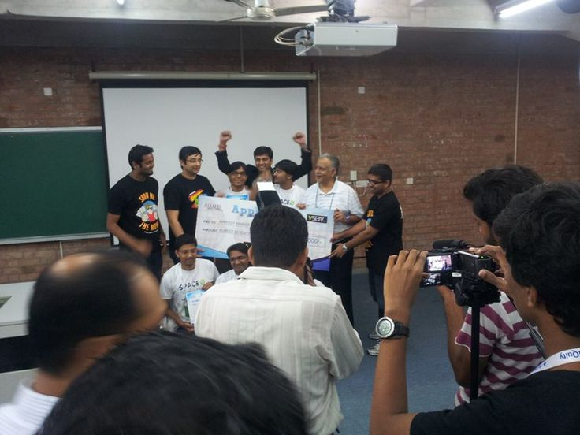
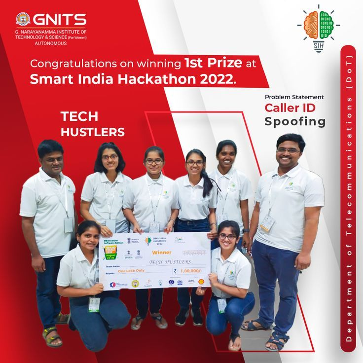
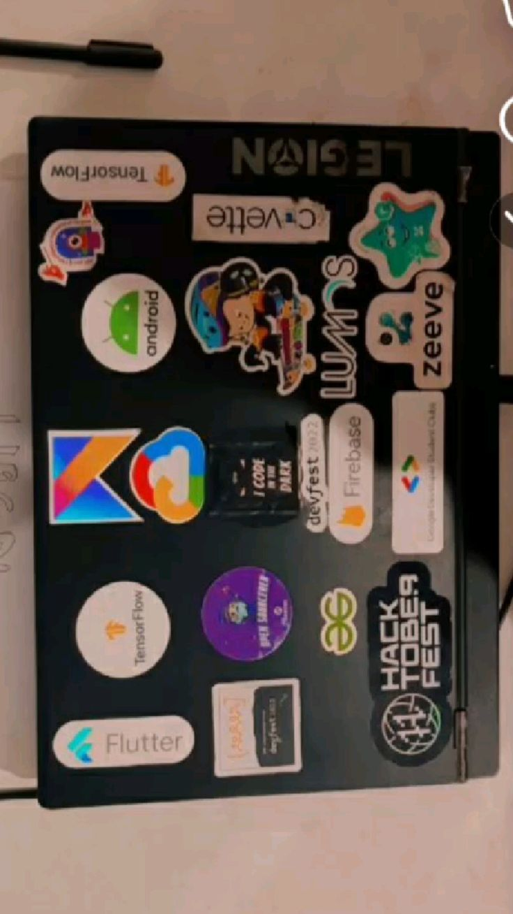
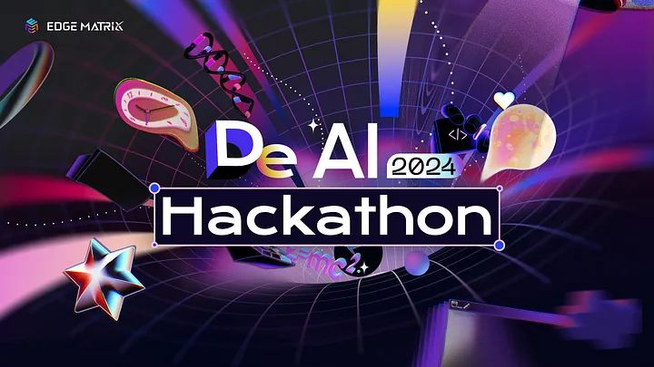

1st place hits different when you didn't expect it.
winning the north-central regional finals of wema bank's hackaholics 6.0 back in december still feels a bit surreal when i look back at the photos. you spend weeks prepping, building prototypes, refining the pitch deck, and wondering if your architecture is going to crumble during the live demo. you show up, you look at the competition, and you realize everyone else is just as hungry as you are.
you pitch your heart out, you show the actual running code, and then you just stand there and wait for the judges to dissect your soul. and then they call your name for 1st place and the imposter syndrome goes quiet for exactly five minutes while you hold the prize.





it's a good feeling. the kind of milestone that fuels the next five projects when you're running on zero sleep and questioning your life choices at 3am. but the trophy doesn't write the next line of code for you. you take the win, you document it for historical accuracy, and then you get right back to work on the things that haven't been solved yet.
walletpaddi was the solution we built. a mobile-first savings product that actually understood the nigerian market. not trying to be stripe. not trying to be some global product copied and pasted into a different geography. specifically building for how nigerians actually relate to saving money, to financial trust, to the informal systems that already exist and need a better interface.
the hackathon reminded me that i'm actually good at this. at the building part. at seeing a problem and rapidly prototyping a solution. at leading a small team to something that works under pressure. i'd kind of forgotten that. the win was a useful reminder.
← Back to Blog